The Foundational History of AIMAAN
The Ahmadiyya International Martial Arts Association of Nigeria (AIMAAN) was established in 1988, founded on the principles of discipline, faith, physical excellence, and service. From its earliest days, the association was envisioned not merely as a sporting body, but as a platform for character development, health, self-defence, leadership, and unity. The story of AIMAAN is inseparable from the lives and sacrifices of its pioneers, whose dedication laid the foundation upon which generations continue to build.
Historical Timeline
AIMAAN Foundation
AIMAAN was established under the directive of Hazrat Khalifatul Masih IV (r.a.) and the leadership of Prof. Mashhud Adenrele Fashola. Grandmaster Yusuf Olanrewaju Nasir introduced Taekwondo to Ahmadiyya members across Nigeria, marking the beginning of organized martial arts training within the Ahmadiyya community.
Grandmaster Ibrahim Rafiu King Joins
Grandmaster Ibrahim Rafiu King began his association with AIMAAN under the mentorship of Grandmaster N. O. Yusuf. He would later play a central role in training members nationwide and forming the AIMAAN Blackbelt College.
First Official AIMAAN Blackbelt Grading
Prior to the first official blackbelt grading, AIMAAN already had a number of senior members who attained senior status before a formal grading system was instituted. Notable among them were Senior Master Naheem Ahmad and Senior Master Hakeem Olaide.
The first official Ahmadiyya International Martial Arts Association of Nigeria (AIMAAN) Blackbelt Grading since its establishment in 1988 was conducted in 1996 at the Ahmadiyya Mosque in Oke Ado, Ibadan, Oyo State, Nigeria. This landmark event marked AIMAAN’s transition into formalized technical and administrative recognition.
Grading Panel:
- Grand Master Nasir Olanrewaju Yusuf, AIMAAN National Coach
- Grand Master Ibrahim Rafiu King, Assistant
- Grand Master Emmanuel Ikpeme, External Facilitator
- Grand Master Kehinde Salawu, Facilitator
- Grand Master Tunji Akinwande, Facilitator
First Degree Blackbelts (1996 Ibadan - Ilaro Grading):
Second Official Blackbelt Grading
Conducted at Ahmadiyya Muslim Jamaat National Headquarters Ojokoro, Lagos State. Introduced new leadership structure with appointed National Coach.
Grading Panel (2000s):
- Grand Master N.O. Yusuf - Leadership
- Senior Master Idris Ahmad - National Coach (Appointed)
- Senior Master Yaqub Anifowoshe - Assistant Coach
- Master AbdulRoqeeb Arowora - Assistant Coach
- Grand Master Ferguson Oluigbo - External Facilitator
- Master Thursdaline Peter - External Facilitator
Recent Official AIMAAN Blackbelt Gradings
In recent years, several official AIMAAN Blackbelt Gradings have been conducted during major national programmes and workshops across Nigeria. These events further strengthened the standardization and growth of AIMAAN’s blackbelt system.
- National Camp, Ilaro, Ogun State, 2019
- National Camp, Ede, Osun State, 2023
- National Blackbelt Workshop, AIMAAN Headquarters, Ahmadiyya Ojokoro, Lagos, 2023
- National Blackbelt Workshop, AIMAAN Headquarters, Ahmadiyya Ojokoro, Lagos, 2024
- National Blackbelt Workshop, AIMAAN Headquarters, Ahmadiyya Ojokoro, Lagos, 2025
- National Camp, Ilorin, Kwara State, 2025
These gradings were conducted under the leadership of Senior Master Monsur Muibullah, during a period in which the leadership structure of AIMAAN was redefined and changed to a National Coordinator system. This structure was approved by the respected Head of Ahmadiyya Youth President, Brother Saheed Aina, with the endorsement of the Head of Ahmadiyya Muslim Jamaat Nigeria, Amir Sahib Mashhud Adenrele Fashola. Under this approval, AIMAAN was placed, governed, and operated under Majlis Khudam ul Ahmadiyya Nigeria, the male youth wing of the Ahmadiyya community.
Key leadership during this period included Master AbdulRoqeeb Arowora as National Coordinator and the leadership of the Chairman, AIMAAN Blackbelt College, Senior Master Idris Raheem.
Organizational Restructuring
AIMAAN placed under the governance of Majlis Khudam-ul-Ahmadiyya Nigeria. Transition approved by Brother Saheed Aina (Sadr Sahib) and Amir Sahib Mashhud Adenrele Fashola. Leadership title changed from "National Instructor/Coach/President" to "National Coordinator".
National Coordinator Era
New leadership structure with elected National Coordinators and departmental system established.
National Coordinators:
- Senior Master Monsur Muibullah (2019-2023)
- Master AbdulRoqeeb Arowora (2024-2026)
AIMAAN Launches Official Website
AIMAAN marks a significant milestone in its digital journey with the launch of its official website on January 30, 2026. Under the leadership of AIMAAN National Coordinator Master AbdulRoqeeb Arowora, Master Abdulsomod Afolabi was delegated to oversee the development and construction of the website. The website serves as a comprehensive platform for documenting AIMAAN's rich history, showcasing its programs, celebrating achievements, and connecting with members and the broader community. This digital presence represents AIMAAN's commitment to transparency, accessibility, and modern organizational practices, while preserving the association's legacy for future generations.
The Founding Pioneers
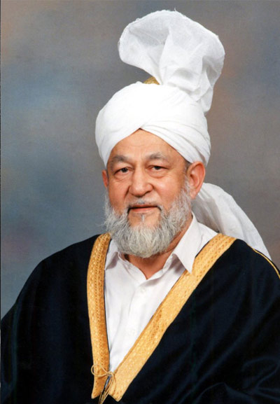
Hazrat Khalifatul Masih IV (Mirza Tahir Ahmad)
Fourth Khalifa of Ahmadiyya Muslim Community | Spiritual Visionary
Hazrat Khalifatul Masih IV, Mirza Tahir Ahmad (r.a.), was the fourth spiritual leader of the Ahmadiyya Muslim Community, serving from 1982 to 2003. The third son of Mirza Bashiruddin Mahmood Ahmad and grandson of Mirza Ghulam Ahmad, he was an erudite scholar who authored influential works on religious polemics, philosophy, evolution, poetry, and ecumenism.
He received his early education at Ta'leemul Islam High School, Qadian, and obtained the degree of Shahid (Religious Scholar) from Jamia Ahmadiyya in 1953. He further advanced his knowledge through higher education at the School of Oriental and African Studies (SOAS), London University, combining Islamic scholarship with Western academic excellence.
Upon assuming the Khalifate in June 1982, Hazrat Khalifatul Masih IV embarked on transformative initiatives that expanded the Ahmadiyya Community globally. He inaugurated historic mosques, including the pioneering Masjid Basharat in Spain in 1982—the first mosque built in Spain in 500 years—and laid the foundation for the first Ahmadiyya Mosque in Sydney, Australia in 1983. He established humanitarian organizations including Humanity First and launched Muslim Television Ahmadiyya, the only 24-hour Islamic programming channel.
In 1988, under his visionary directive, Hazrat Khalifatul Masih IV oversaw the establishment of the Ahmadiyya International Martial Arts Association of Nigeria (AIMAAN). Recognizing the need for youth empowerment through discipline and character development, he tasked Prof. Mashhud Adenrele Fashola with leading the initiative to create a unique platform blending martial arts with moral and spiritual values, self-defense training, physical fitness, and community engagement.
During his khilafat, he launched the Waqf-e-Jadid scheme to spread Islam worldwide and the Waqf-e-Nau scheme to dedicate Ahmadi Muslim children to community service. Despite intensified state-sponsored persecution, he united and expanded the Community, eventually migrating to England to continue his leadership.
Hazrat Khalifatul Masih IV's legacy—combining spiritual wisdom, educational innovation, and humanitarian vision—continues to inspire the Ahmadiyya Community and remains fundamental to AIMAAN's founding principles and mission.
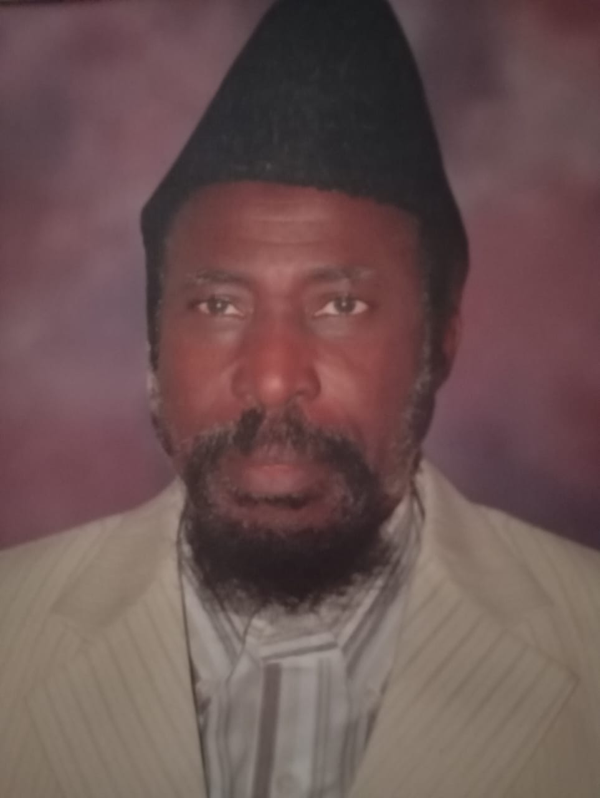
Prof. Mashhud Adenrele Fashola
Academic Leader | Pioneer Visionary of AIMAAN
Prof. Mashhud Adenrele Fashola is a distinguished Nigerian academic and development economist whose career spans nearly four decades in higher education. He earned his B.Sc. in Economics with First Class Honours from the University of Lagos in 1972, laying a strong foundation for a life of scholarship and leadership.
He pursued postgraduate studies at Erasmus University Rotterdam on a Netherlands Government Fellowship, where he obtained the Docrandus (Drs.) degree in Development Economics and Planning. He later completed his PhD in Economics at the University of Lagos, further solidifying his academic standing.
Prof. Fashola served as a Lecturer at the University of Lagos from 1975 to 2013, mentoring generations of students. He also served as a Guest Research Fellow at Erasmus University Rotterdam and held teaching appointments at Lagos State University. He is currently a Professor of Development Economics and Planning at Crown University International Chartered Incorporated Worldwide.
In 1988, while serving as Senior Lecturer at the University of Lagos and President of the Ahmadiyya Muslim Youth Organization (KHUDDAM), Prof. Fashola identified the need for structured youth development through discipline and character building. He partnered with Coach Nasir Yussuf, a gifted student and accomplished Taekwondo Grand Master, to establish organized martial arts training for Ahmadiyya youths.
This visionary initiative quickly gained momentum, drawing participants from across Nigeria and beyond the Ahmadiyya community. Under his guidance, the programme evolved into what became the Ahmadiyya International Martial Arts Association of Nigeria (AIMAAN), now one of Nigeria’s most respected martial arts bodies.
Prof. Fashola’s pioneering role in blending martial arts training with moral, spiritual, and intellectual development remains a defining pillar of AIMAAN’s philosophy and enduring success.
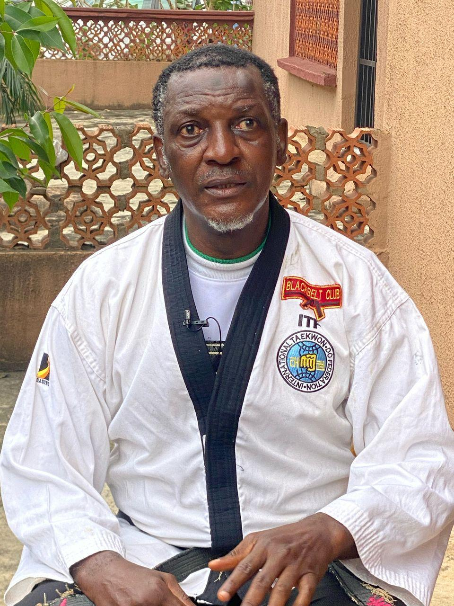
Grandmaster Yusuf Olanrewaju Nasir (Ghost Lee)
Chief Consultant & CEO, RY Consults International | 9th Dan Black Belt
Grandmaster Yusuf Olanrewaju Nasir, popularly known as "Ghost Lee," is one of the foremost pillars of AIMAAN and Nigerian martial arts history. Now in his 60s, he serves as the Chief Consultant and Chief Executive Officer of RY Consults International and RY Physical Health Center, where his expertise supports hospitals, health institutions, corporate security bodies, and quasi-governmental forces.
A 9th Degree (Dan) holder in both World Taekwondo and Shotokan Karate, Grandmaster Nasir combines academic excellence with decades of martial arts mastery. He holds university degrees and professional certifications in Economics, Physical Health, Psychology, Security, and Safety (Loss Prevention) and is an alumnus of the University of Lagos.
His martial arts journey began in the early 1970s with Kung Fu, progressed into Shotokan Karate, and culminated in Taekwondo in 1981. He later became one of the earliest Kukkiwon (World Taekwondo Federation) Blackbelt holders in Nigeria and gained membership in international martial arts bodies in the United States, the United Kingdom, and Turkey.
In 1988, following an invitation from Professor Mashhud Adenrele Fashola, then National Qaid of Ahmadiyya, Grandmaster Nasir introduced Taekwondo to Ahmadiyya members across Nigeria, leading to the establishment of AIMAAN. Under his leadership, the association produced some of the highest-ranking Taekwondo Blackbelts in the country.
Among his enduring contributions is the introduction of Taekwondo as a psychomotor subject in Islamic schools and organizations, making the art accessible to all ages and genders. He produced athletes, instructors, and referees who have served at both national and international levels. His expertise in physical combat, weaponry, and physical health also contributed significantly to Nigeria's corporate security sector and quasi-governmental forces.
As an author of Physical Health Perfection, Grandmaster Nasir continues to influence health and self-defence education. His legacy remains a cornerstone of AIMAAN's philosophy, structure, and continued growth.
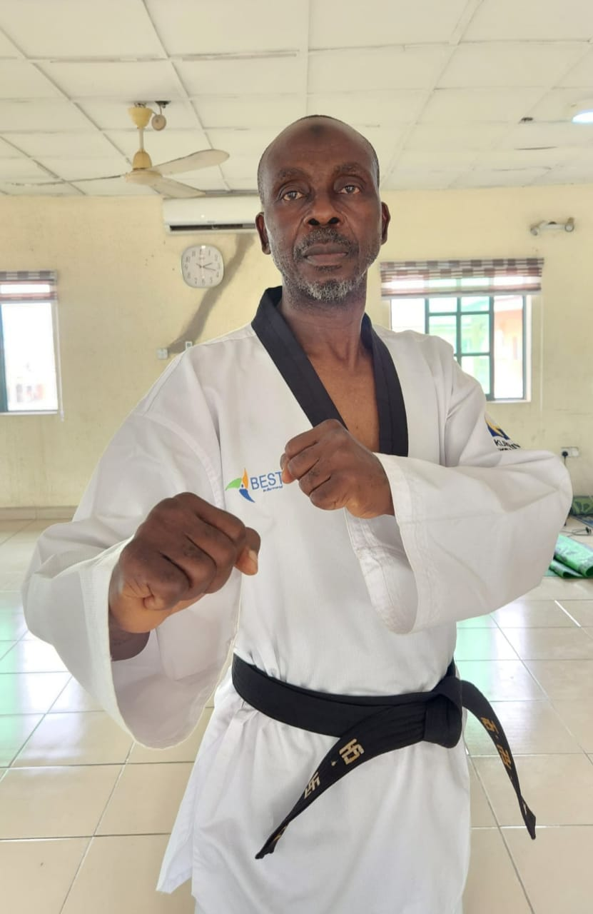
Grandmaster Ibrahim Rafiu King
Third Generation Taekwondo Pioneer | AIMAAN Blackbelt College Founder
Grandmaster Ibrahim Rafiu King was born into the family of Mallam Adeyemi Ibrahim of Ijomu Oro in the Oro Kingdom of Kwara State. He belongs to the third generation of Taekwondo practitioners in Nigeria, following pioneers such as Senior Grandmaster Emmanuel Ikpeme and his coach, Senior Grandmaster Azubuike Onumonu.
He began Taekwondo training in 1981 and attained his First Dan Blackbelt in 1986 during the historic Kukkiwon-standard grading conducted by Korean instructors. In April 1990, he participated in Nigeria's first official referee course held at the Indoor Sports Hall of Kwara Stadium, emerging among the country's certified referees.
His association with AIMAAN began in 1991 under the mentorship of Grandmaster N. O. Yusuf, after which he played a central role in training members nationwide. Following the first official AIMAAN Blackbelt grading, he became instrumental in forming and leading the AIMAAN Blackbelt College, coordinating advanced training programs across Ibadan, Ijebu-Ode, Ojokoro, Somolu, Ijede, the University of Lagos, and other locations.
On 28th December 1997, he was awarded his Fourth Dan Blackbelt under the leadership of Senior Grandmaster Emmanuel Ikpeme, then a Sixth Dan holder, marking another significant milestone in his Taekwondo journey.
In the year 2000, the introduction of elective leadership saw him emerge as National Coach. Despite initial challenges, his tenure strengthened AIMAAN through constitutional drafting, standardization of certificates and badges, organization of training camps, and institutional stability. During his competitive years, he earned the nickname "Bullet" for his powerful Dolyo Chagi kick, a reputation that remains respected in Nigerian Taekwondo history.
Complete Veteran Members List
These early generations formed the foundational backbone of AIMAAN, giving rise to all subsequent generations within the association.
First and Second Generation Veterans
The Female Wing in AIMAAN
From its formative years, AIMAAN has upheld inclusiveness by nurturing a strong female wing. The association has produced numerous female Senior Masters and Masters who trained, competed, instructed, and mentored younger generations. Their dedication and achievements remain an integral part of AIMAAN's history and continue to inspire present and future female practitioners.
Early Female Generation Members
AIMAAN Departments
Ahmadiyya International Martial Arts Association of Nigeria (AIMAAN) operates through five officially recognized departments, each playing a vital role in the administration, development, and promotion of martial arts within the association.
National Executive Department
The administrative arm of AIMAAN. It is responsible for policy direction, governance, coordination, and the overall smooth running of the association at national and state levels.
Executive Offices:
- National Coordinator (NC)
- Assistant National Coordinator (ANC)
- General Secretary (GS)
- Financial Secretary (FINSEC)
- Technical Director (TD)
- Chairman, AIMAAN Blackbelt College
- Public Relations Officer (PRO)
AIMAAN Blackbelt College
The highest technical, legislative, and disciplinary body of AIMAAN. Made up of all registered AIMAAN black-belters across all Dan (degree) levels.
Current Leadership:
- Idris Roheem - Chairman
- Adeoti Maruf - Vice Chairman
- Adeniran Sodeeq Abidemi - Secretary
- Adegoke Lukmon - Financial Secretary
Technical Department
Established in 2020. Responsible for maintaining high technical standards across all AIMAAN activities.
Current Technical Executives:
- Adeagbo Mahmud - Technical Director
- Olabode Raufeeq - Assistant Technical Director
- Adegoke Abdullah - Secretary
Referee Department
Officially established in 2015 to regulate, train, and uphold officiating standards within the association.
Current Referee Executives:
- Ashade Dawood - Referee Chairman
- Tijani Fatai - Assistant Referee Chairman
- Adeosun Ibrahim - Secretary
Public Relations Office
Also known as AIMAAN Media and Publicity. Manages the association's image, communication, and documentation.
Current Media Team:
- Faremi Ibrahim - Chairman
- Ogunsola Ridwanullah - Vice Chairman
- Bolarinwa Muhdsodiq - Graphic Designer
State Leadership History
AIMAAN State Coaches (1990s to Late 2000s)
From the early 1990s through the late 2000s, AIMAAN's growth across Nigeria was sustained by dedicated Senior Masters who travelled extensively to train, mentor, and establish martial arts programs across multiple states.
Early State Coaches:
Key State Coaches and Field Veterans:
State Coordinator Era (2017 - Present)
This Era began in the year 2017 and remains operational to the present day.
Current AIMAAN National Coach:
Master Idrees Ibrahim - AIMAAN National Coach (Current)
Master Olabode Raufeeq - AIMAAN National Assistant Coach (Current)
Current AIMAAN State Coordinators:
Pride of AIMAAN: Hall of Achievement
Champions, Representatives, and International Ambassadors
AIMAAN has produced members who have achieved excellence by winning numerous medals and awards both as National Champions and International Champions. Many have represented states across Nigeria, flying the flag of AIMAAN at the respective states, and we have members who have represented Nigeria at international tournaments.
International Tournaments and Competitions:
- World University Games (FISU)
- African Games (AAG)
- World Youth Championship
- West African Polytechnic Games (WAPOGA)
- West African University Games (WAUG)
- African Youth Games
- Olympic Youth Games
- World Taekwondo Championship
- International Open Taekwondo Championships
Notable Champions and National/International Representatives:
Refereeing Excellence
In Taekwondo refereeing, there are three levels: Local, National, and International referees. AIMAAN has produced members at all levels of the refereeing profession, contributing significantly to the development and standardization of Taekwondo officiating in Nigeria.
AIMAAN Referees and Their Certification Levels:
Coaching Excellence
AIMAAN has also produced coaches with both National and International certifications, contributing to the technical development of Taekwondo in Nigeria and beyond.
International Coaching Certifications:
Recently, two of our members attended the Level 2 World Taekwondo International Coaching Certificate:
- Master Adeagbo Mahmud
- Master Adegoke Abdullah
Coaching Leadership:
Master Adeagbo Mahmud holds the distinction of being the only coach with the highest coaching experience who has coached the national team at various competitions both within and outside the country. His contributions to national team development have been instrumental in raising the competitive standard of Nigerian Taekwondo on the international stage.
AIMAAN Fallen Heroes
Honouring Lives, Sacrifices, and Enduring Legacies
Late Senior Master Sulaimon Sanusi (APOLA)
Passed away: 2023
Popularly known as APOLA, he was famous for his powerful Ap Oligi Kick (Straight Kick). He was part of the first group of members who took part in the 1st AIMAAN official black belt grading in 1996. He became the first Oyo State Coach appointed under the leadership of GrandMaster N.O. Yusuf.
He trained numerous students who have become Masters and Instructors, leaving a lasting legacy. He was a national and international champion in both taekwondo and kickboxing. Sulaimon Sanusi was among the very first AIMAAN members to represent the association in All African Games trials during the 1990s.
May his soul continue to rest in peace.
Late Senior Master Qazeem Imran
Passed away: 1st November 2022
His passion for AIMAAN led him to make immense sacrifices for the growth of the association in Abeokuta, Ogun State. He dedicated himself to training and developing countless students, many of whom became national and international champions, including Master Arowora AbdulRoqeeb, Shakirudeen Popoola, Master Zurur Ajayi, among others.
He competed in numerous local taekwondo tournaments with outstanding performances and was among the first set of coaches in Abeokuta, Ogun State, introducing taekwondo to the region.
May his soul continue to rest in peace.
Late Senior Master Tahir Akintobi
Passed away: Early 1990s (1993)
A very active AIMAAN member from Ibadan, Oyo State, he was a strong and skilled player of his time. His close sparring partner was Senior Master Hafiz Olaniyan.
He was also part of the first generation of AIMAAN members in the 1990s.
May his soul continue to rest in peace.
Late Master Musa Ismail
Passed away: 2025
An active AIMAAN member, he once served as State Coordinator in Kwara State, making significant contributions to training and building members.
He dedicated and sacrificed much for the progress of AIMAAN and competed in local taekwondo tournaments with outstanding performances. He was also a certified National Referee, officiating at numerous national and international taekwondo tournaments held in Nigeria.
May his soul continue to rest in peace.
Archival Gallery
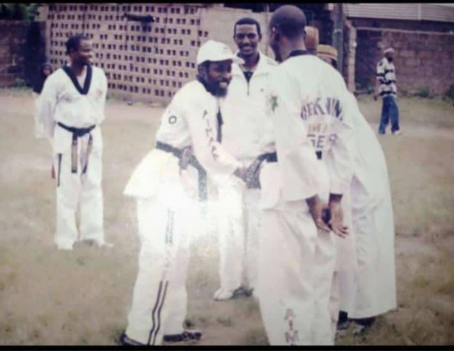
Professor Mashhud Adenrele Fashola (in white cap) at the AIMAAN Workshop, Ojokoro, Lagos – 2005. Also pictured: Grand Master N. O. Yusuf, Grand Master Ibrahim Rafiu King, and Senior Master Bashir Oyetunji
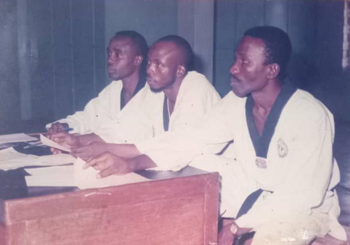
Grand Master Ibrahim Rafiu King (center), Grand Master Kehinde Salawu, and Grand Master Tunji at the AIMAAN Grading, 1990s.
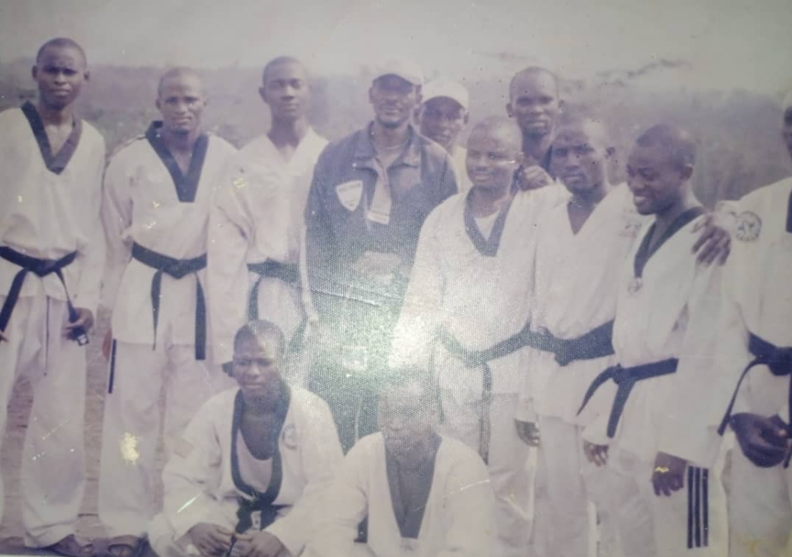
Veteran AIMAAN Black Belters with Grand Master N. O. Yusuf.
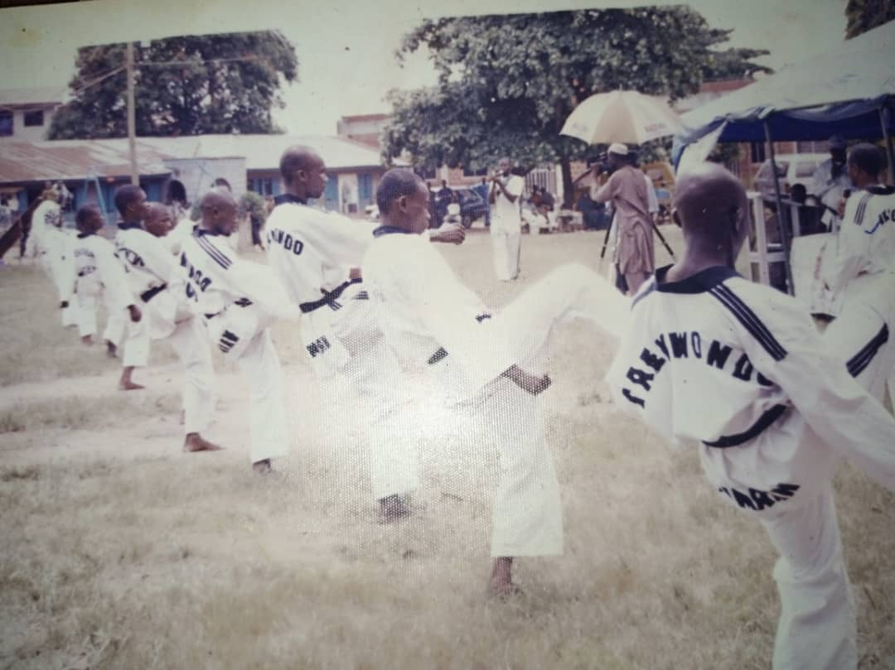
AIMAAN members training during the AIMAAN Workshop, Ojokoro, Lagos – 2005.
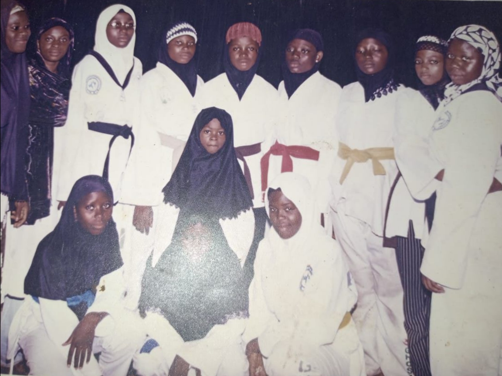
Early Female Generation Members
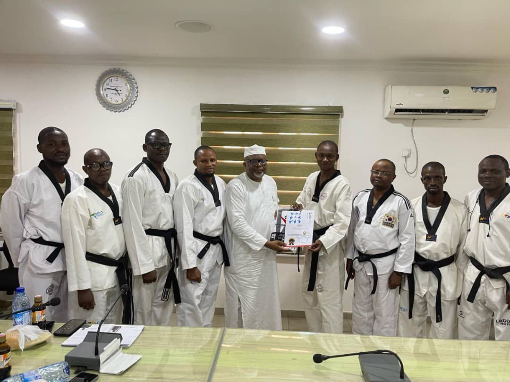
AIMAAN presents a Black Belt Honorary Certificate to the Amir Sahib, Head of Ahmadiyya Nigeria, under the leadership of Master Arowora AbdulRoqeeb – 2025.
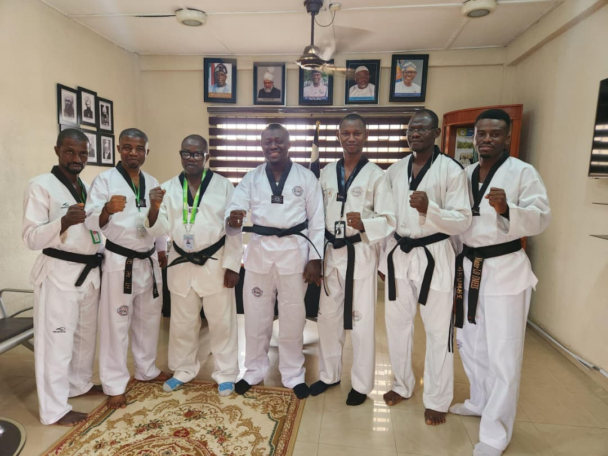
AIMAAN EXCOs paid a courtesy visit to former Sadr, Bro. Roqib Akinyemi, pictured at the center.
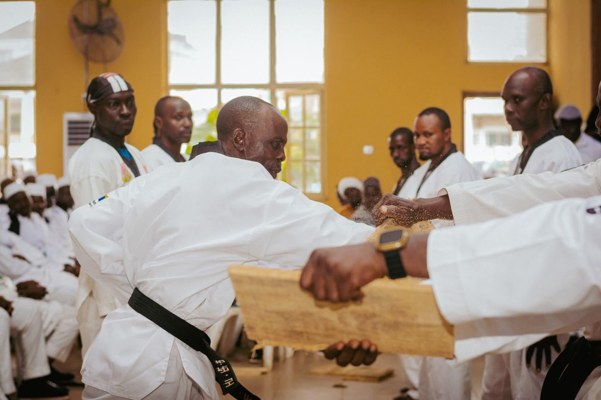
Grand Master Ibrahim King and other AIMAAN Veterans in a demo
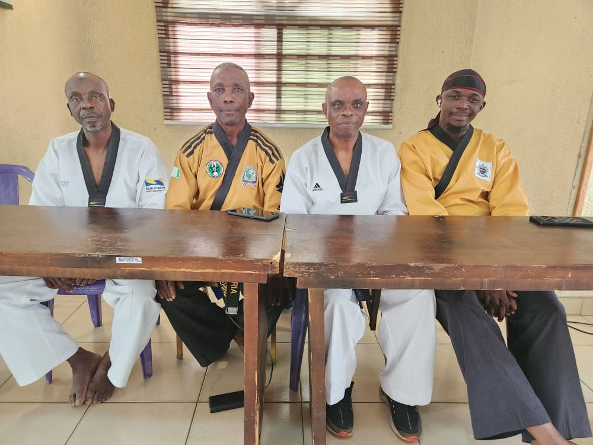
Pictured from left to right are GM Ibrahim Rafiu King, GM Kehinde Salawu, GM Ugboko Michael, and Master Kazeem Dele during the 2026 AIMAAN Blackbelt National Workshop
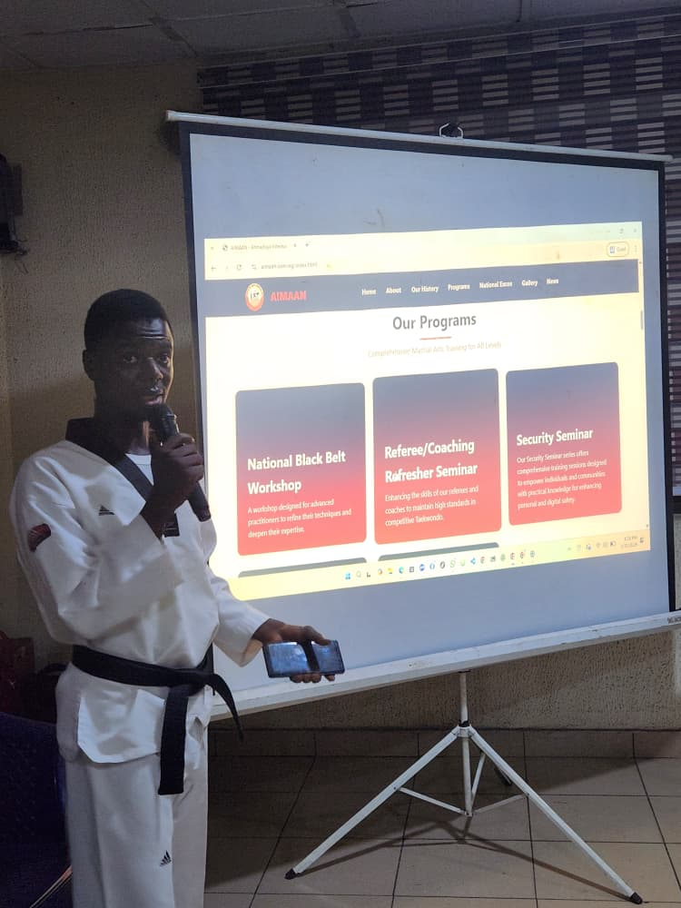
Master Abdulsomod Afolabi presenting the AIMAAN Official Website Launch at the 2026 Blackbelt National Workshop